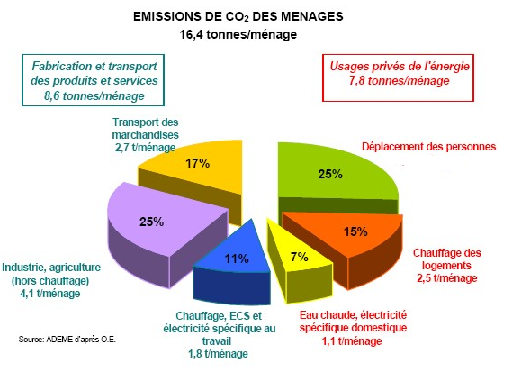

IMPACTS ENERGETIQUES ET ENVIRONNEMENTAUX DES TRANSPORTS
Principale cause des changements climatiques de la planète, le gaz carbonique (CO2) , accentuant la capacité de l'atmosphère de conserver la chaleur du soleil par effet de serre.

La polution atmosphérique :
- Une urbanisation croissante, une proportion croissante de la population mondiale vit en zone urbaine, en 2006 50% de la population et en 2050 75% prévue.
- Le trafic routier est à l'origine de l'émission de nombreux polluants de l'air. Il constitue l’un des principaux émetteurs de particules et de NOx, en particulier dans les zones urbaines.
- En 2011, le projet APHEKOM a notamment conclu qu'habiter à proximité du trafic routier augmente sensiblement la morbidité attribuable à la pollution atmosphérique.
En France, il est estimé que l’exposition aux particules fines (PM2,5) réduit l’espérance de vie de 8,2 mois1 et est à l’origine de 42 000 morts prématurées chaque année.
- En juin 2012, l’OMS a classé les effluents d'échappement des moteurs Diesel comme cancérogènes certains pour l’homme, les émissions des moteurs essence étant classées cancérogènes probables. C’est donc l’un des secteurs prioritaires d’action pour améliorer la qualité de l’air.
La pollution de l’air a également un impact économique : les coûts de santé de la pollution atmosphérique pris dans leur ensemble représentent chaque année entre 20 et 30 milliards d’euros en France, dont 0,8 à 1,7 milliard d’euros supportés directement par le système de soin.
Pour l’ADEME, Agence de l'environnement et de la maîtrise de l'énergie
la diminution des impacts énergétiques et environnementaux des transports passera par la combinaison de plusieurs types d’évolutions en matière de besoins de déplacement, de modes de transport (pour les personnes comme pour les marchandises), de types de mobilité (vélo, marche à pied …) et de leur organisation (systèmes de libre-service, de co-voiturage, d’autopartage…), de motorisation et de carburants (hydrocarbures, carburants de synthèse, électricité, …).
Les enjeux dequalité de l’air en zone fortement urbanisée nécessitent tout particulièrement le développement de solutions de mobilité adaptées.
Created with the Personal Edition of HelpNDoc: Free HTML Help documentation generator